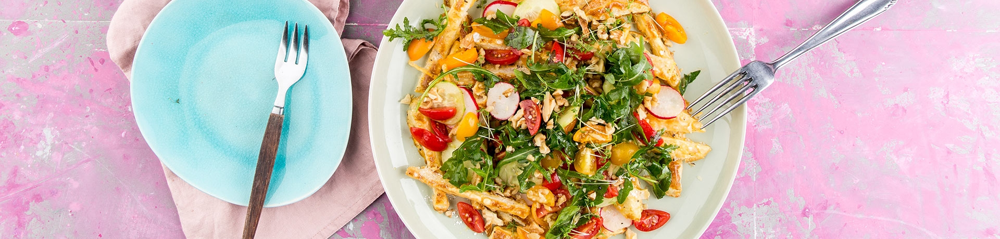

Kohlrabipommes mit Tomatensalat

Zutaten:
- 800 g Kohlrabi
- 5 EL Mehl
- 2 Eier (Gr. M)
- Salz
- Pfeffer
- 1 halbe Salatgurke
- 1 Bund Radieschen
- 300 g Kirschtomaten
- 1 Bund Rucola
- 1 EL Essig
- 2 EL Öl
- 8 EL Salatmayonnaise
- 5 EL Zitronensaft
- 3 EL Agaven-Dicksaft
- 4 EL Walnusskerne
- 1 EL Zucker
- 1 Packung(en) Kresse
Ran an den Herd!
- Backofen auf 200 °C vorheizen (Umluft 180 °C). Backblech mit Backpapier auslegen. Kohlrabi waschen, schälen und in ca. 1 cm dicke Stifte schneiden. Mehl in eine Schale geben. Eier verquirlen und mit Salz und Pfeffer würzen. Die Pommesstifte zuerst im Mehl wälzen und dann durch die Eimasse ziehen. Gut abtropfen und auf dem Blech auslegen. Im Ofen für ca. 20 Minuten backen und zwischendurch wenden.
- Nun die Gurke und Radieschen waschen und alles in dünne Scheiben schneiden. Tomaten waschen und vierteln. Rucola waschen und trocken schleudern. Alle Zutaten mit Essig, Öl, Salz und Pfeffer würzen.
- Mayonnaise, Zitronensaft und Agaven-Dicksaft mischen und salzen. Walnusskerne ohne Öl in einer Pfanne anrösten. Dann mit Zucker unter Rühren karamellisieren. Kresseblättchen abschneiden.
- Pommes aus dem Ofen nehmen und auf einer Servierplatte anrichten. Zum Schluss den Salat, Mayonnaise, Walnusskerne und Kresse darüber geben.